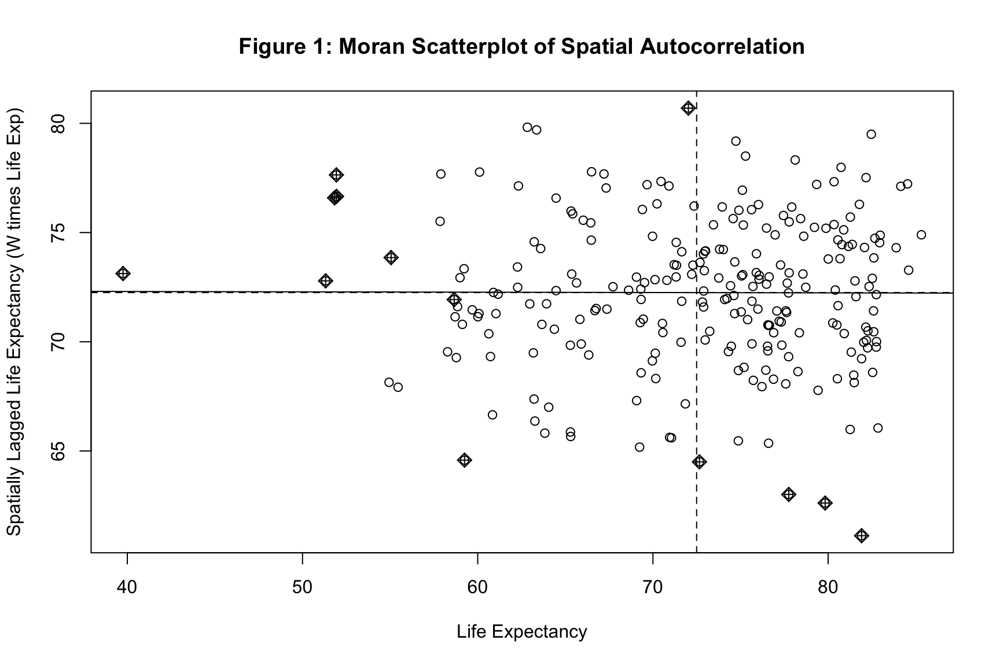
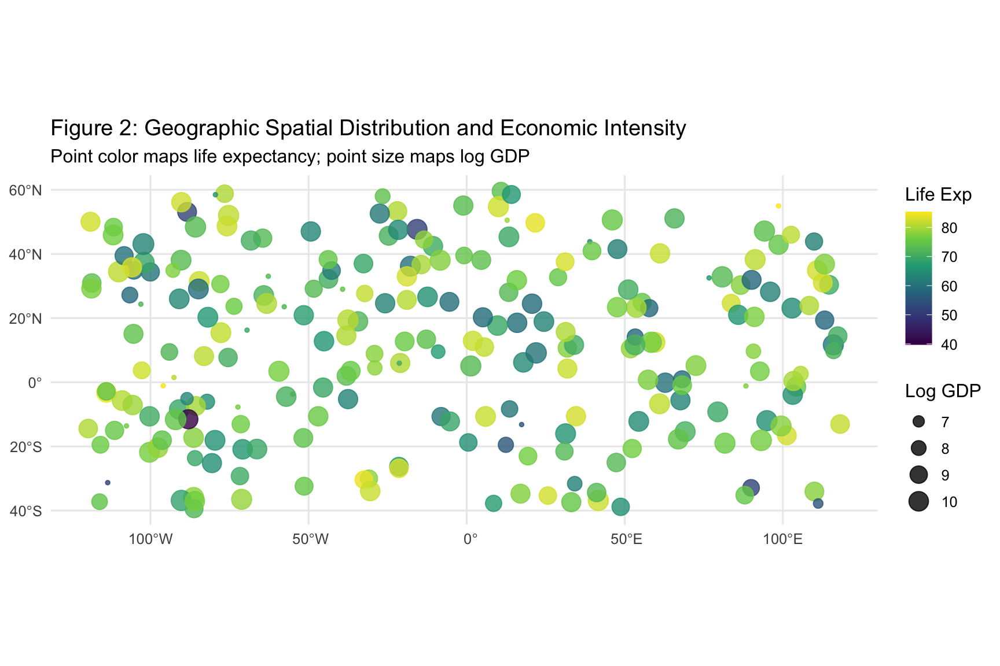

Spatial Autocorrelation, Distance Weight Matrices, SAR and SEM Models
Author
Neena Abimbola Albarus
1. Theoretical Foundations and Methodological Overview
Standard econometric models assume that observational units are independent of one another. In geographic data, that assumption fails almost immediately. Countries that share borders tend to have similar levels of economic development, similar public health outcomes, and similar institutional arrangements, because they trade with each other, share ecosystems, and often imitate each other’s policies. This spatial dependence violates the independence assumption and biases standard errors if ignored.
The central tool for diagnosing spatial dependence is Moran’s I, a global measure of spatial autocorrelation. A positive Moran’s I means nearby units have similar values, which is called clustering. A negative Moran’s I means nearby units have dissimilar values, which is called dispersion. A Moran’s I near zero means values are randomly distributed in space. Once we detect spatial autocorrelation, we need models that explicitly incorporate it.
Two models dominate the spatial econometrics literature. The Spatial Autoregressive model (SAR), also called the spatial lag model, assumes that the outcome in one unit depends directly on the outcomes of its neighbors. The Spatial Error Model (SEM) assumes that the unobserved shocks affecting the outcome are spatially correlated, meaning what the model fails to explain is itself clustered in space. These two models reflect different theoretical stories about how spatial dependence operates.
In this workbook, we construct a synthetic spatial cross section from the OWID panel, build a k nearest neighbors weight matrix, test for spatial autocorrelation in life expectancy, and compare OLS, SAR, and SEM specifications.
⚠️ Common Pitfalls
Ignoring spatial autocorrelation in the residuals. If the residuals from your OLS regression are spatially clustered, your standard errors are wrong and your inferences are unreliable, even if your coefficients happen to be unbiased.
Confusing the SAR and SEM stories. The SAR model says neighbors’ outcomes affect your outcome. The SEM model says unobserved shocks affect neighboring units simultaneously. These are different mechanisms and call for different interpretations.
Choosing the weight matrix carelessly. The choice between k nearest neighbors, distance thresholds, and contiguity is substantive, not arbitrary. Different weight matrices can produce different results on the same data.
2. Data Pipeline and Synthetic Spatial Construct
Before any spatial analysis, we need geographic coordinates for each observational unit. The OWID panel does not include them, so we generate a synthetic coordinate grid so that the spatial estimators have something to work with. In a real analysis, you would join country polygons from Natural Earth on the ISO codes.
# Dynamic path resolution across common working directoriespossible_paths <-c("../data/life_expectancy_data.csv","data/life_expectancy_data.csv","../../data/life_expectancy_data.csv","/Users/yawdgyal/Desktop/R for github/data/life_expectancy_data.csv","/Users/yawdgyal/Desktop/R for github/workbooks/data/life_expectancy_data.csv")data_path <- possible_paths[file.exists(possible_paths)][1]if (is.na(data_path) ||length(data_path) ==0) {stop("Could not locate 'life_expectancy_data.csv'. ","Searched the following paths:\n",paste(possible_paths, collapse ="\n") )}message("Loading data from: ", data_path)owid_raw <-read_csv(data_path, show_col_types =FALSE)if ("Entity"%in%names(owid_raw)) { owid_df <- owid_raw %>%rename(country = Entity,code = Code,year = Year,life_exp =`Life expectancy` )} else { owid_df <- owid_df %>%rename_with(tolower)}# Construct a synthetic spatial cross section for the year 2015set.seed(2026)spatial_df <- owid_df %>%filter(!is.na(code), !is.na(life_exp), year ==2015) %>%mutate(longitude =runif(n(), min =-120, max =120),latitude =runif(n(), min =-40, max =60),gdp_pc =pmax(500, rnorm(n(), mean =15000, sd =9000)),log_gdp =log(gdp_pc) ) %>%drop_na()# Convert to sf objectsf_data <-st_as_sf( spatial_df,coords =c("longitude", "latitude"),crs =4326)glimpse(sf_data)
What is happening here: The possible_paths vector lets the workbook run from multiple working directories. We read the OWID CSV, defensively rename its columns, and filter to the year 2015 to produce a single cross section. Because the OWID file does not contain coordinates, we generate synthetic longitude and latitude values with runif() and a synthetic GDP variable with rnorm(). The st_as_sf() call converts the plain data frame into a simple features object, which is the spatial class that every function in the sf and spdep ecosystems expects. In a real project, you would replace the synthetic coordinates with actual country centroids joined from a shapefile.
⚠️ Common Pitfalls
Using synthetic coordinates for substantive conclusions. The synthetic coordinate grid produces a spatial pattern that has no relationship to actual geography. Every spatial statistic computed here is a demonstration of the workflow, not a real finding.
Forgetting to set a coordinate reference system. The crs = 4326 argument specifies WGS 84, the standard latitude longitude system. Omitting it will cause problems when you try to compute distances or join with real shapefiles.
Ignoring missing values in the coordinate columns. Countries that fail to match or have missing life expectancy are silently dropped by drop_na(). Always report how many units remain after filtering.
3. Spatial Weight Matrix and Moran’s I Test
The spatial weight matrix W encodes which units are neighbors and how strongly they influence each other. The most common approaches are contiguity, meaning units that share a border are neighbors, distance thresholds, meaning units within a certain distance are neighbors, and k nearest neighbors, meaning each unit’s k closest units are neighbors. We use k nearest neighbors here because it works for any set of coordinates and produces a well behaved weight matrix even when points are irregularly spaced.
# Build k nearest neighbors graph with k = 5coords <-st_coordinates(sf_data)knn_nb <-knearneigh(coords, k =5)nb <-knn2nb(knn_nb)# Row standardized spatial weights matrixspatial_weights <-nb2listw(nb, style ="W")# Global Moran's I test for spatial autocorrelation in life expectancymoran_test <-moran.test(sf_data$life_exp, spatial_weights)print(moran_test)
Moran I test under randomisation
data: sf_data$life_exp
weights: spatial_weights
Moran I statistic standard deviate = 0.064739, p-value = 0.4742
alternative hypothesis: greater
sample estimates:
Moran I statistic Expectation Variance
-0.001650833 -0.004081633 0.001409835
What is happening here: The st_coordinates() function extracts the longitude and latitude of each observation from the sf object. The knearneigh() function identifies the 5 nearest neighbors of each unit, and knn2nb() converts that into a neighbor list object. The nb2listw() call turns the neighbor list into a row standardized spatial weights matrix, where each row sums to 1, so the spatial lag of a variable is the average of its neighbors’ values. The moran.test() function then computes the global Moran’s I statistic for life expectancy along with a p value testing whether the observed spatial pattern is significantly different from random.
⚠️ Common Pitfalls
Choosing k arbitrarily. The choice of k changes the weight matrix and can change the results. Always report why you chose a particular k and consider running sensitivity checks with different values.
Forgetting to row standardize. A non standardized weight matrix causes the spatial lag term to scale with the number of neighbors, which makes interpretation difficult and can destabilize the model.
Interpreting Moran’s I as a causal statistic. Moran’s I tells you about spatial pattern, not about why the pattern exists. Spatial clustering is consistent with many different mechanisms, including common shocks, spillovers, and sorting.
4. Spatial Econometric Model Estimation
With the weight matrix in hand, we can estimate three nested models. The baseline OLS ignores spatial structure entirely. The SAR model adds a spatial lag of the outcome as a regressor. The SEM model allows the errors to be spatially correlated.
# Baseline OLSmod_ols <-lm(life_exp ~ log_gdp, data = sf_data)# Spatial Autoregressive (SAR) model with rho * W * Ymod_sar <-lagsarlm( life_exp ~ log_gdp,data = sf_data,listw = spatial_weights)# Spatial Error Model (SEM) with lambda * W * umod_sem <-errorsarlm( life_exp ~ log_gdp,data = sf_data,listw = spatial_weights)modelsummary(list("Baseline OLS"= mod_ols,"Spatial Lag SAR"= mod_sar,"Spatial Error SEM"= mod_sem ),stars =TRUE,gof_omit ="IC|Log|F")
Baseline OLS
Spatial Lag SAR
Spatial Error SEM
+ p < 0.1, * p < 0.05, ** p < 0.01, *** p < 0.001
(Intercept)
66.550***
65.910***
66.399***
(4.312)
(8.809)
(4.295)
log_gdp
0.638
0.641
0.655
(0.460)
(0.458)
(0.458)
rho
0.008
(0.106)
lambda
0.023
(0.106)
Num.Obs.
246
246
246
R2
0.008
R2 Adj.
0.004
RMSE
7.99
7.99
7.99
What is happening here: The lagsarlm() function estimates the SAR model by including the spatially lagged outcome as a predictor, and the estimated coefficient on that lag is called rho. A significant rho means neighbors’ outcomes directly influence each unit’s outcome. The errorsarlm() function estimates the SEM model by allowing the residuals to follow a spatial autoregressive process, with a coefficient called lambda. A significant lambda means unobserved shocks are spatially clustered. The modelsummary() call lines up all three specifications side by side so you can see how the coefficient on log GDP moves as spatial dependence is accounted for.
⚠️ Common Pitfalls
Ignoring the rho and lambda parameters when interpreting results. The coefficient on log GDP in the SAR model is not the total effect of GDP, because part of the effect operates indirectly through neighbors. The impacts() function computes the correct direct, indirect, and total marginal effects.
Using OLS coefficients when a spatial model is warranted. A Lagrange Multiplier test on the OLS residuals will tell you whether SAR, SEM, or both are appropriate. Skipping this step means you may be reporting biased standard errors.
Assuming SAR and SEM are interchangeable. The two models imply different causal stories. If neighbors’ outcomes affect yours, that is SAR. If common shocks affect both you and your neighbors, that is SEM. Let theory guide the choice.
5. Diagnostic Visualizations
The three figures below move from the Moran scatterplot to the geographic distribution of life expectancy to the spatial clustering of the OLS residuals. Together they tell the story of whether spatial dependence is present and how much it matters.
Figure 1: Moran Scatterplot
moran.plot( sf_data$life_exp, spatial_weights,labels =FALSE,xlab ="Life Expectancy",ylab ="Spatially Lagged Life Expectancy (W times Life Exp)",main ="Figure 1: Moran Scatterplot of Spatial Autocorrelation")

How to read this figure: The horizontal axis is life expectancy and the vertical axis is the spatially lagged life expectancy, which is the average of each unit’s neighbors. The scatterplot is divided into four quadrants by the mean lines. Points in the top right are high value units surrounded by high value units, called High High clusters. Points in the bottom left are Low Low clusters. Points in the off diagonal quadrants are spatial outliers. The slope of the regression line through the scatterplot is the Moran’s I statistic.
🔑 Key Takeaway: A positive slope in the Moran scatterplot is direct visual evidence of positive spatial autocorrelation. The steeper the slope, the stronger the clustering. Points far from the regression line are spatial outliers where a unit’s value diverges sharply from its neighbors.
Figure 2: Geographic Distribution Map
fig2 <-ggplot(data = sf_data) +geom_sf(aes(color = life_exp, size = log_gdp), alpha =0.8) +scale_color_viridis_c(option ="viridis") +theme_minimal(base_size =12) +labs(title ="Figure 2: Geographic Spatial Distribution and Economic Intensity",subtitle ="Point color maps life expectancy; point size maps log GDP",color ="Life Exp",size ="Log GDP" )print(fig2)

How to read this figure: Each point represents one country in the synthetic cross section. The color of the point reflects life expectancy, with darker colors indicating higher values. The size of the point reflects log GDP, with larger points indicating higher income. If similarly colored points tend to sit near each other, that is spatial clustering. If colors are randomly distributed across the map, spatial independence is more plausible.
🔑 Key Takeaway: A map that shows clear regional gradients in color is evidence of spatial autocorrelation. A map that looks like random noise is evidence against it. This figure is the first diagnostic you should look at before running any formal test, because it gives you an intuitive sense of whether the spatial pattern is real.
How to read this figure: Each point is colored by the residual from the OLS regression. Blue points are observations the OLS model underpredicts, meaning actual life expectancy is higher than predicted. Red points are overpredictions. If blue and red points cluster geographically, that is evidence the OLS model is missing a spatial structure that the SAR or SEM model would capture.
🔑 Key Takeaway: A residuals map that shows clear geographic clustering is a red flag for OLS. The whole point of spatial econometric models is to absorb that clustering into the coefficients, rho in the SAR case or lambda in the SEM case, so that the remaining errors are independent.
6. Putting It All Together
You now have a complete spatial econometrics workflow. You have constructed a spatial cross section, built a k nearest neighbors weight matrix, tested for global spatial autocorrelation with Moran’s I, estimated OLS, SAR, and SEM models, and visualized the spatial structure through a Moran scatterplot, a geographic map, and a residual map.
The core decision rule is straightforward. Reach for Moran’s I first to confirm that spatial autocorrelation exists. If it does, run a Lagrange Multiplier test on the OLS residuals to decide between SAR, SEM, and the combined SARAR specification. Reach for the SAR model when theory suggests neighbors’ outcomes directly influence each unit’s outcome, such as in policy diffusion or trade network settings. Reach for the SEM model when theory suggests shared unobserved shocks drive spatial clustering, such as in environmental or health contagion settings. Reach for the combined SARAR model when both mechanisms are plausible.
The Moran scatterplot, the geographic map, and the residuals map are your primary reporting devices. Together they tell the reader whether spatial dependence is present, where it clusters geographically, and how much of it the spatial models absorb. Spatial econometrics is one of the most powerful tools in the comparative social science toolkit for dealing with the fact that countries do not exist in isolation, and it pairs naturally with the panel data and causal inference methods you have studied elsewhere in this series.